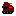
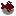

Enemies
This bots have been dispatched by the Star Union Fleet to enforce the quarantine on Phaeton after the colony was struck by mass suicides and dementia epidemics. They are slow, not very robust and have a limited sight but can be dangerous nevertheless if they attack in groups. Try to catch them off-guard and attack from behind with hand weapons.
 AMPVVery fast and dangerous autonomous multi-purpose vehicles that patrol important regions and can cross almost any terrain. Avoid them whenever you can by sneaking around them or attack them with heavy weapons. Luckily, the AMPV's sight is not very good, especially at night.
 CopterCopters are flying drones and the only unit that can cross water. They are extremely fast and dangerous. Find a proper weapon and prepare a lot of ammunition if you want to attack them.
TurretThe stationary turrets are gruesome enemies. Star Union Fleet installed them at important locations to keep out intruders and establish quarantine zones. Turrets have a very limited sight and can attack only adjacent targets. A rocket launcher is the only weapon that is strong enough to destroy a turret. Sometimes, it is better to pass by a turret than to fight it.
ArtilleryArtillery is the only ranged unit in the game. Its sight is good and has no blind spots. Others than melee units, the artillery won't try to reach the player character immediately after noticing him. Instead, the unit will stand its ground and shoot grenades at the player from the distance. The best way to deal with artillery units is avoiding them. If an artillery has spotted you, try to escape or run to it to destroy it before it can kill you.
PigratPigrats are a native life form that has its name due to the appearance of its specimen. These bear-sized predators have pink skin and noses that resemble those of rats. They inhabit swamp areas of Phaeton. Other than pigs or rats, pigrats are armed with sharp claws that can slice through the human body like knifes. Pigrats have great perception so it is almost impossible to sneak up on them. Beware these beasts!
Twitter
Reddit